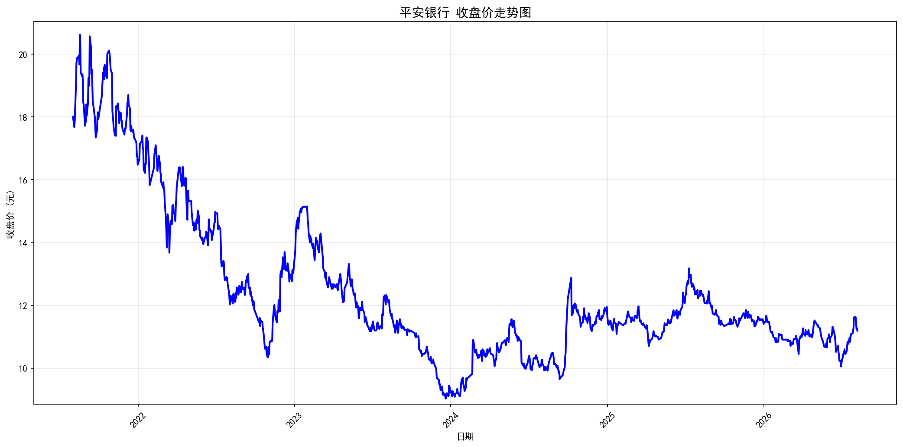
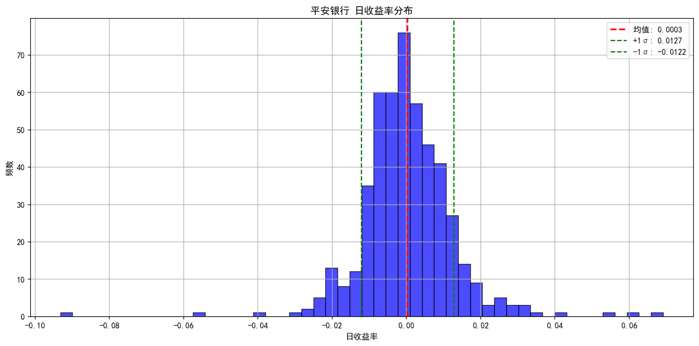
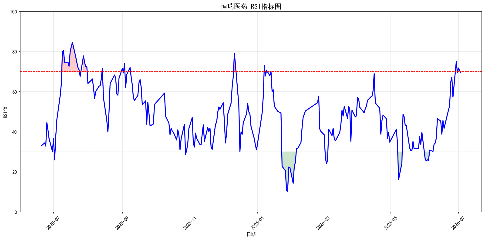
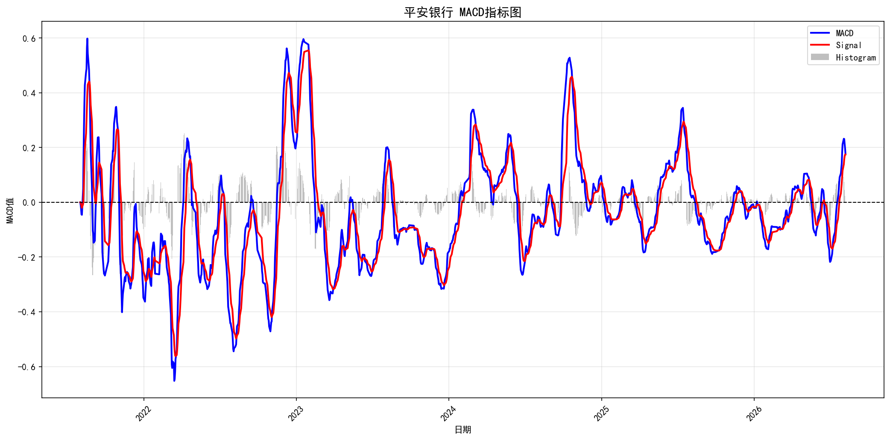
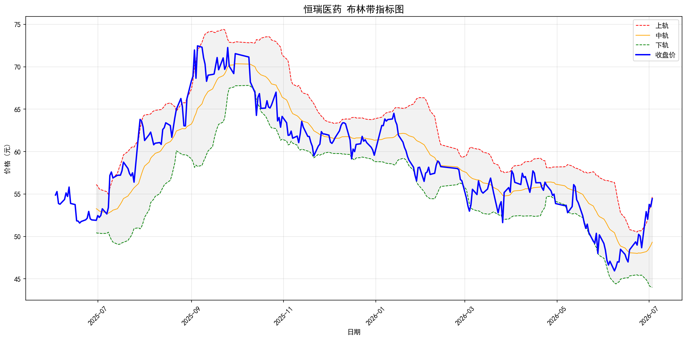
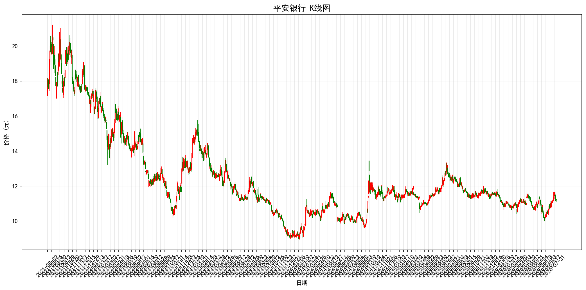
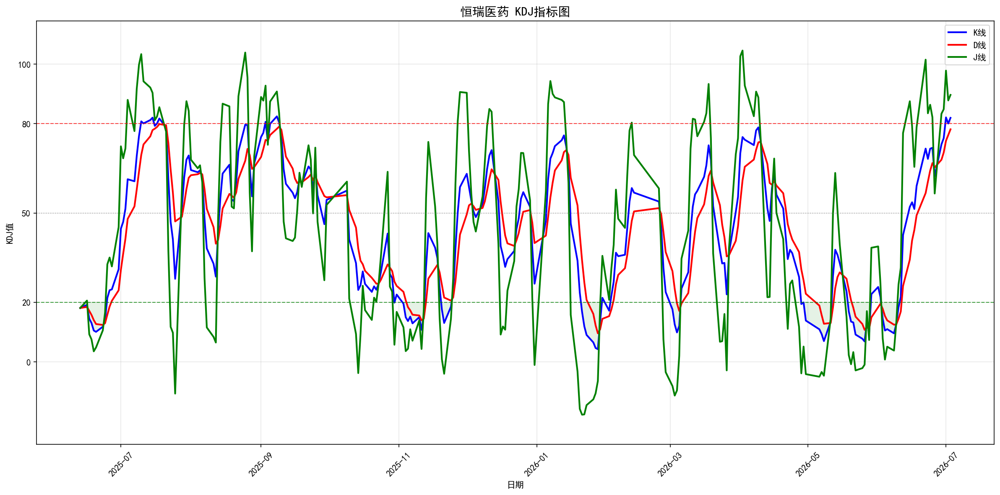

📊 收盘价走势图

走势解读：该图表展示了恒瑞医药在分析周期内的收盘价变化趋势。从图中可以观察到股价的整体波动情况，识别关键的价格支撑位和压力位。通过分析收盘价的变化，可以帮助投资者判断股票的短期和中期走势方向。
📉 日收益率分布图

分布特征：该图显示了日收益率的频数分布。红色虚线为收益率均值，绿色虚线为±1倍标准差范围。从分布形态来看，收益率呈现近似正态分布特征，大部分收益集中在均值附近。标准差反映了股价的波动性，标准差越大表示风险越高。
📊 RSI相对强弱指标

RSI解读：RSI（相对强弱指数）是衡量股价强弱的技术指标，取值范围0-100。超买区(>70)表示股价可能回调，超卖区(<30)表示股价可能反弹。红色填充区域为超买区间，绿色填充区域为超卖区间。投资者可以根据RSI的位置判断买卖时机。
📊 MACD指标图

MACD解读：MACD（指数平滑异同移动平均线）由蓝线(MACD)、红线(Signal信号线)和柱状图(Histogram)组成。当MACD线从下方穿过信号线时形成金叉，是买入信号；当MACD线从上方穿过信号线时形成死叉，是卖出信号。柱状图显示了MACD与信号线的差值，正值表示多头力量强，负值表示空头力量强。
📊 布林带指标图

布林带解读：布林带由三条线组成——红色上轨、橙色中轨（20日均线）和绿色下轨。上轨和下轨是中轨加减2倍标准差形成的。当股价接近或突破上轨时，可能处于超买状态；当股价接近或突破下轨时，可能处于超卖状态。灰色区域为布林带通道，通道宽度反映了股价的波动性。
📊 K线图

K线解读：K线图展示了每个交易日的开盘价、收盘价、最高价和最低价。红色K线表示收盘价高于开盘价（上涨），绿色K线表示收盘价低于开盘价（下跌）。实体部分为开盘价和收盘价之间的价差，上下影线分别代表最高价和最低价。K线组合形态可以帮助投资者判断市场多空力量的变化。
📊 KDJ指标图

KDJ解读：KDJ是一种常用的技术分析指标，由K线(蓝色)、D线(红色)和J线(绿色)组成。图中标注了三条分界线：超卖线(20)、中线(50)和超买线(80)。当K、D、J值低于20时为超卖区域，高于80时为超买区域。红色填充为超买区间，绿色填充为超卖区间。KDJ金叉（K线从下向上穿过D线）是买入信号，死叉（K线从上向下穿过D线）是卖出信号。